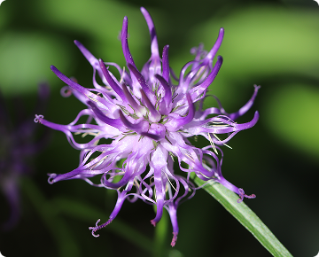
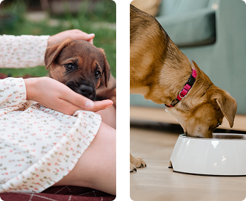
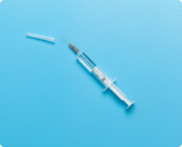
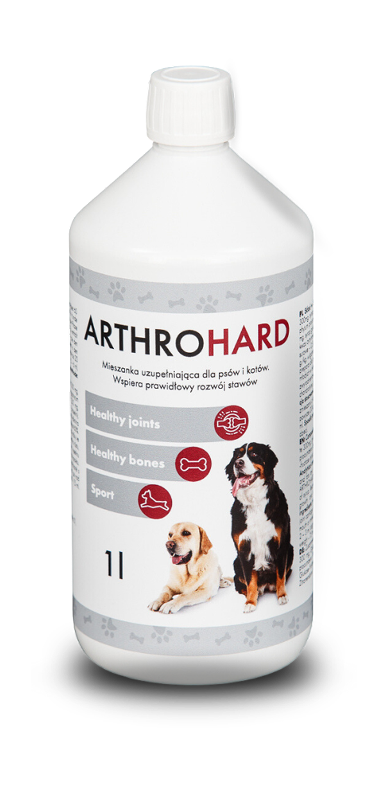

Lab-V Arthrohard Preparat
na wsparcie stawów dla psa i kota
Arthrohard to dobrze przyswajalny suplement diety w formie syropu,
stworzony z myślą o zdrowiu stawów Twojego psa lub kota.
Co wyróżnia nasz preparat
Innowacyjny dodatek - Czarciego Pazura
Zapewnia dodatkowe wsparcie w zwalczaniu stanów bólowych i
zapalnych. Skoncentrowane składniki aktywne, opracowane we
współpracy z lekarzami weterynarii, przynoszą szybkie i zauważalne
efekty, szczególnie korzystne dla zwierząt z poważnymi problemami
stawowymi.

Wygoda -
dwa sposoby podawania
Bezpośrednio do pyszczka
Zmieszany z karmą

Skuteczność -
skoncentrowana dawka
Tylko jedna porcja dziennie. To nie tylko wygoda, ale również
gwarancja, że Twoje zwierzę otrzymuje wszystko, czego potrzebuje,
aby cieszyć się zdrowiem i aktywnością na długo. Skorzystaj z zalet
Arthrohard i zobacz różnicę w komforcie życia swojego
zwierzęcia.

Skład w 5 ml
Co dają poszczególne składniki:
Siarczan glukozaminy
650 mgGlukozamina jest naturalnym składnikiem chrząstki. Dodatek
glukozaminy przyczynia się do zwiększenia produkcji
glikozaminoglikanów (m.in. siarczanu keratanu, heparanu, kwasu
hialuronowego), które pomagają w odbudowie chrząstki, co jest
szczególnie korzystne dla zwierząt ze zmianami zwyrodnieniowymi
stawów.
Siarczan chondroityny
300 mgChondroityna, podobnie jak glukozamina, jest składnikiem
chrząstki. Chondroityna pomaga zwalczać enzymy, które niszczą
chrząstkę, a także pomaga chrząstce zatrzymać wodę, co jest ważne
dla jej sprężystości i absorpcji wstrząsów.
Kwas hialuronowy
50 mgKwas hialuronowy jest kluczowym składnikiem płynu stawowego,
który działa jak smar i amortyzator dla stawów. Suplementacja
kwasem hialuronowym może pomóc w utrzymaniu prawidłowej objętości
i konsystencji płynu stawowego.

Czarci pazur
250 mgCzarci pazur jest rośliną, która ma właściwości przeciwzapalne i
przeciwbólowe. Może to pomóc zwierzętom, które doświadczają bólu i
stanu zapalnego związanego z problemami ze stawami.
Witamina C
50 mgWitamina C jest potężnym przeciwutleniaczem, który może pomóc w
ochronie stawów poprzez neutralizację wolnych rodników, które mogą
uszkadzać chrząstkę. Ponadto, witamina C odgrywa ważną rolę w
produkcji kolagenu, kluczowego składnika chrząstki.
MSM
250 mgMetylosulfonylometan, czyli MSM, to naturalny związek siarki,
który pomaga w utrzymaniu zdrowych stawów poprzez zmniejszenie
stanu zapalnego i bólu. MSM może również pomagać w produkcji
kolagenu, co przyczynia się do zdrowia chrząstki stawowej.